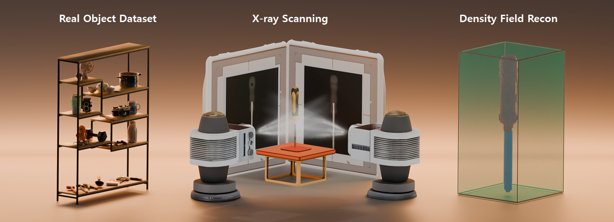
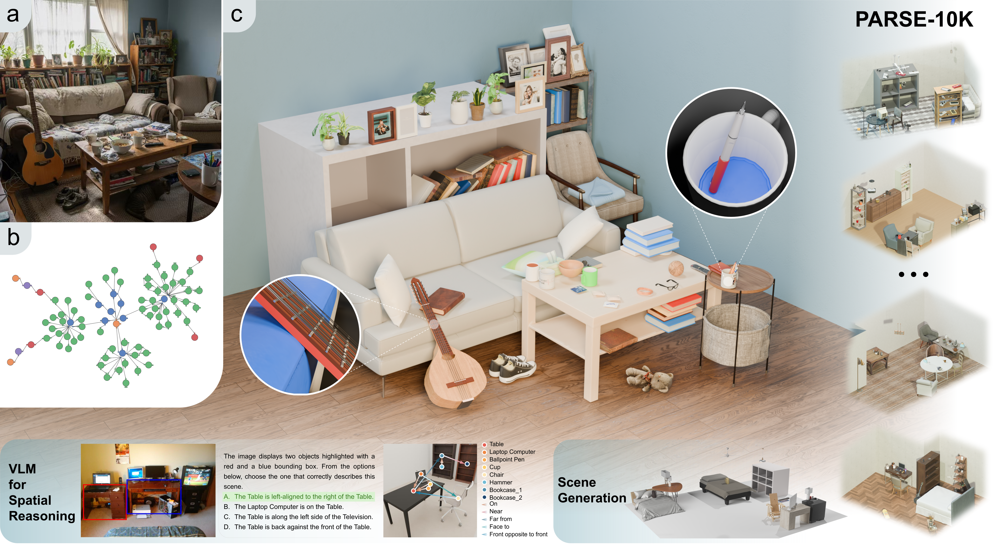

XDen-1K: A Density Field Dataset of Real-World Objects
ECCV 2026
A multi-modal dataset of real-world objects, featuring paired biplanar X-ray scans and reconstructed density fields.
 XDen-1K: A Density Field Dataset of Real-World ObjectsECCV 2026 A multi-modal dataset of real-world objects, featuring paired biplanar X-ray scans and reconstructed density fields.  PARSE: Part-Aware Relational Spatial ModelingCVPR 2026 A framework that leverages explicit part-level relational descriptions to procedurally construct spatially grounded scenes.
|